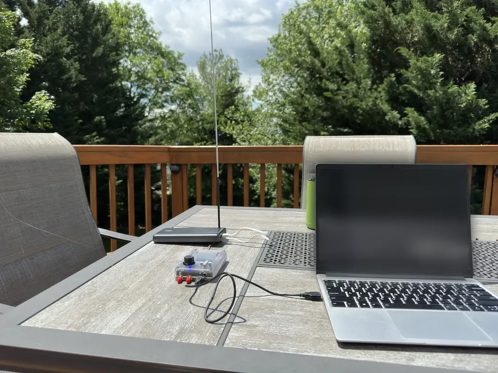

I See You Mr Plane
It’s a nice day out, let’s go plane spotting.
I Can Hear You Scream
As a big fan of planes, I have a Flightradar24 subscription. Flightradar lets you see aircraft stats and live locations on the web. They can do that because planes broadcast all this information. People capture it, and stream it to Flightradar. That’s cool and all1, but I want to capture this data myself.
The set up I used for this, was my laptop doing the decoding, a Hackrf One as my software defined radio, and a 20db amp to make the signal more stronk.

This setup worked pretty well. I was picking up the aircraft long before I was able to see them. I need to do this again, just with less trees and houses to block the signal. And maybe a better camera.
-
It really is. ↩︎